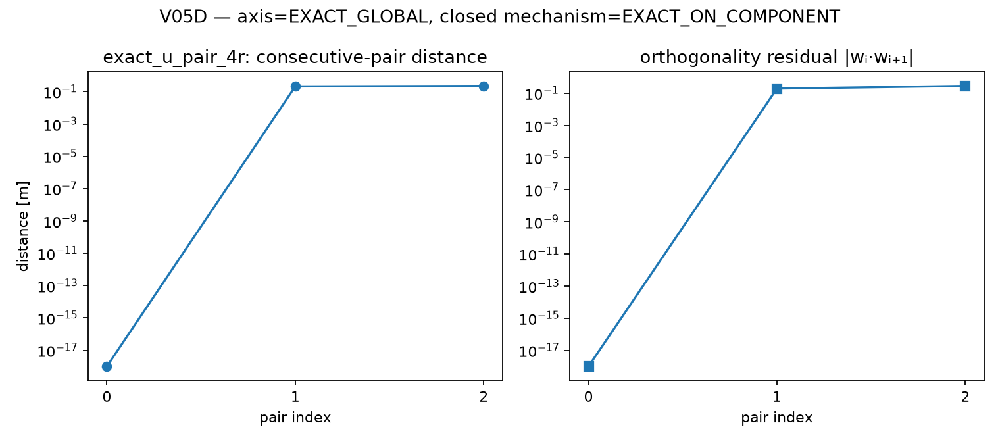
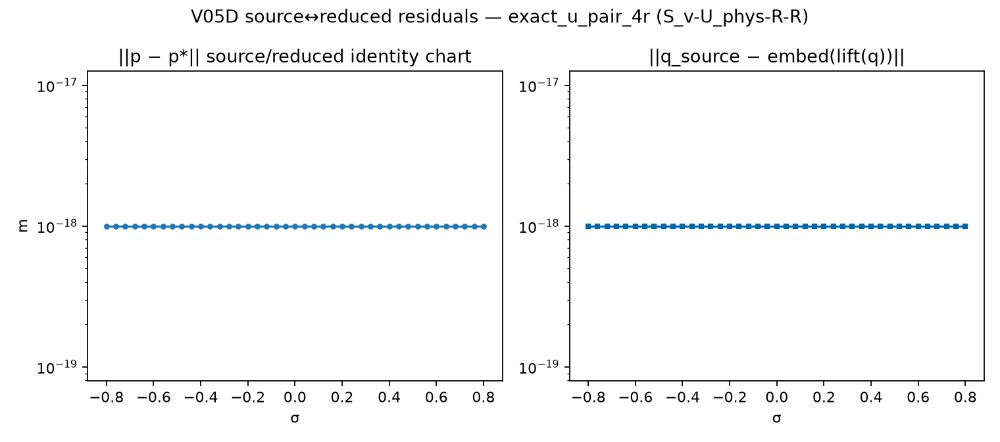
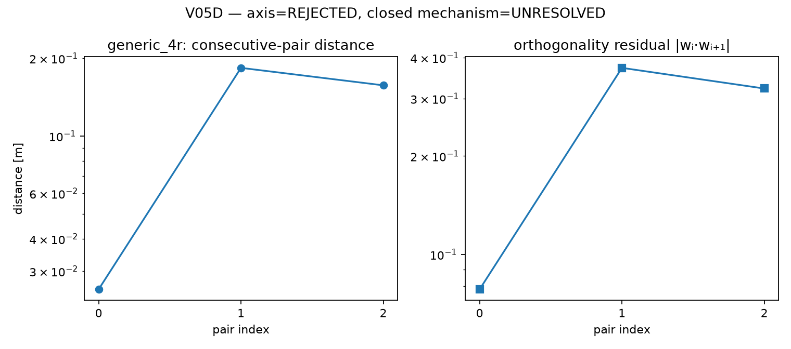
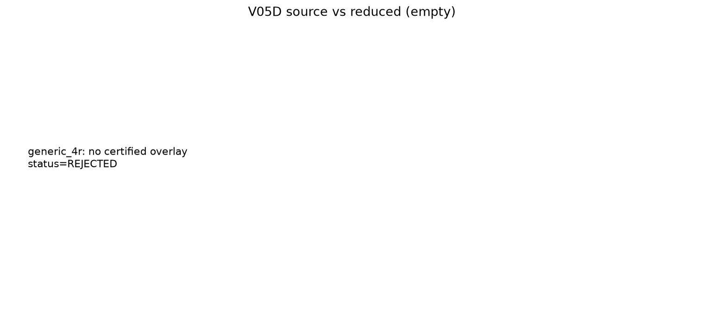

Exact consecutive RR→U aggregation on the spatial-4R corpus, issuing a
DecompositionCertificate with role-aware S_v-U_phys-R-R
(not explorer U_v / tool_a winding semantics).
exact_u_pair_4r should certify on the scoped fiber component
(EXACT_ON_COMPONENT); generic_4r is rejected.
Multi-component completeness remains unverified. V05E near-aligned rejection is implemented.
| Architecture | Status | Topology | Roles | Tangent err | Trajectory err |
|---|---|---|---|---|---|
exact_u_pair_4r | EXACT_ON_COMPONENT | S_v-U_phys-R-R | S_v,U_phys,R_phys,R_phys | 0.0 | 0.0 |
generic_4r | REJECTED | none | — | nan | nan |




S_v-R-U_phys-R / S_v-R-R-U_phys embedding certificates